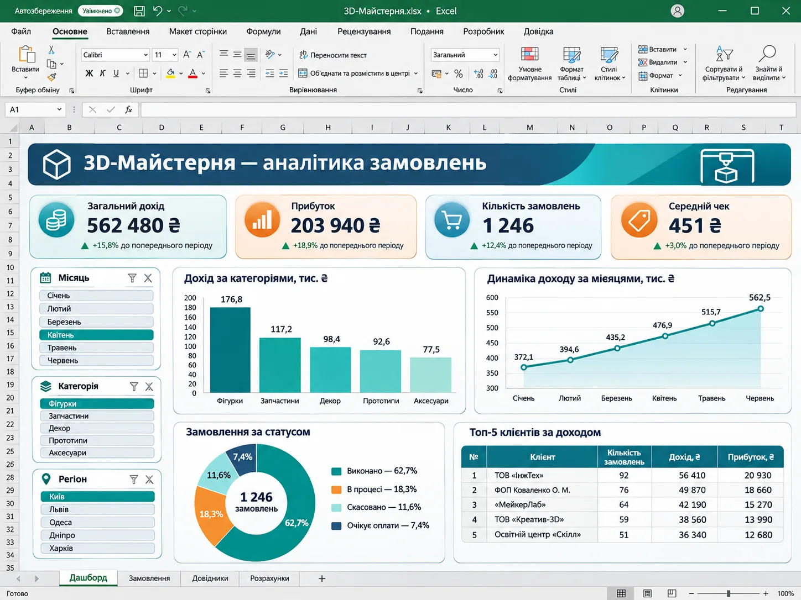
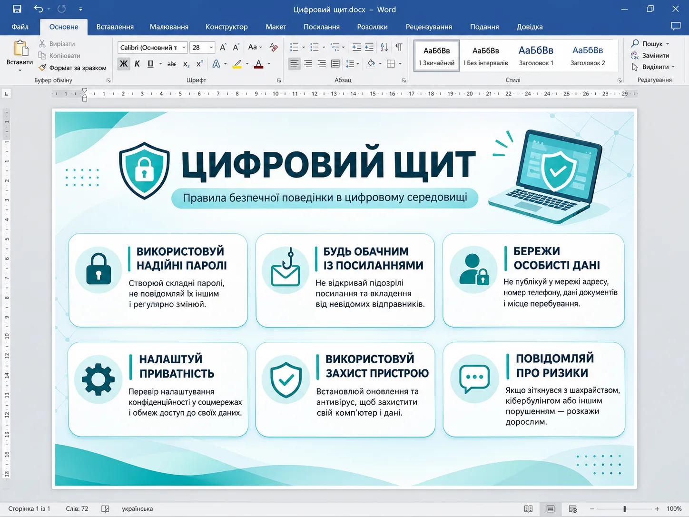
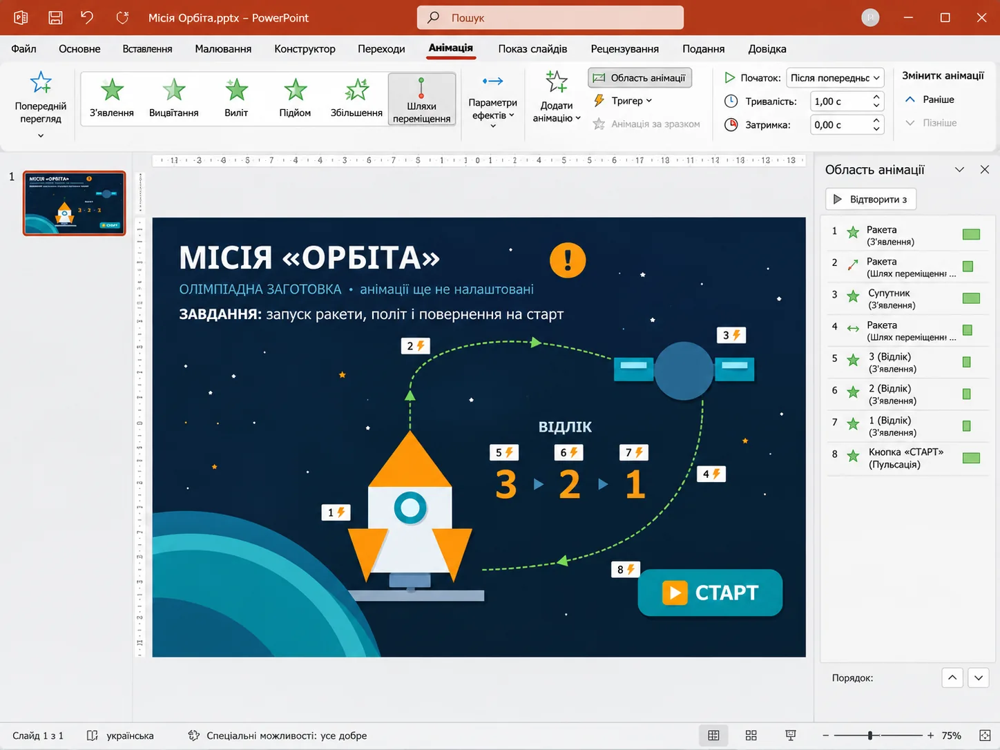

Excel 75 хв · тренуванняМОДУЛЬ 01 / 04
3D-Майстерня
Аналітика замовлень 3D-виробів. Аналітика та формули.
100 балівПерейти до завдання →
Чотири практичні завдання з офісних технологій: матеріали для роботи, зразки результатів, відеопідказки та зрозумілі критерії оцінювання.
Оберіть напрям, прочитайте умову, завантажте початкові файли та перегляньте відеопояснення. Кожне завдання оцінюється в 100 балів.

Excel 75 хв · тренуванняАналітика замовлень 3D-виробів. Аналітика та формули.
 Access 80 хв · тренування
Access 80 хв · тренуванняБаза учасників та результатів. Реляційні бази даних.

Word 65 хв · тренуванняПостер з онлайн-безпеки. Графічні об’єкти та композиція.

PowerPoint 75 хв · тренуванняКерована анімація запуску ракети. Тригери й траєкторії руху.
Сайт допомагає підготуватися самостійно. Основне розв’язання виконуєте у Microsoft Office.
З’ясуйте, який результат потрібно отримати та як розподіляються бали.
Працюйте зі стартовими файлами, не змінюючи вихідні дані.
Ролик на 5 хв 30 с містить поглиблені підказки й схеми без готового рішення.
Використовуйте візуальний зразок як орієнтир композиції, а не як готову відповідь.
Тренувальні завдання можна виконувати окремо або об'єднати в один практичний тур.
Орієнтир для повного олімпіадного туру — 4 години. Окремі тренувальні завдання мають власний орієнтовний час і в сумі тривають довше.
Ні. Відеопояснення підкажуть порядок дій, потрібні інструменти й способи перевірки. Основну роботу ви виконуєте самостійно.
Так. Після завантаження повного архіву сайт, вихідні файли, зображення та чотири MP4 відкриваються локально без підключення до мережі. Для виконання завдань потрібні програми Microsoft Office.
Зразки демонструють бажану композицію та оформлення. Точні вимоги до кінцевого файла вказані в умовах завдань.
На сторінці кожного модуля є окремий PDF з усіма шістьма вимогами та таблицею балів. Можна також завантажити збірник умов Word.